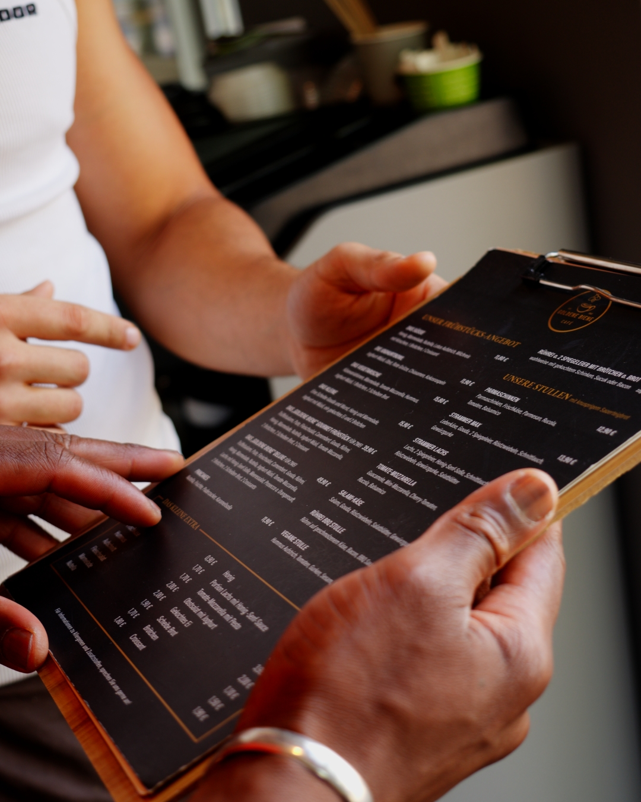

Social Media selber machen oder Agentur? Der ehrliche Vergleich

Du weißt, dass Social Media wichtig ist. Aber sollst du es selbst in die Hand nehmen oder einen Profi beauftragen? Beide Wege haben ihre Berechtigung – und ihre Fallstricke. In diesem ehrlichen Vergleich bekommst du eine klare Entscheidungshilfe: Wann sich Selbermachen lohnt, was eine Agentur wirklich anders macht, was beides kostet und warum die beste Lösung oft dazwischen liegt.
Das Wichtigste in Kürze
- Selbermachen lohnt sich bei kleinem Budget, viel Eigenmotivation und mindestens 10–15 Std./Woche Zeit.
- Das größte Risiko in Eigenregie ist nicht schlechter Content, sondern gar kein Content nach ein paar Wochen.
- Eine Agentur bringt Erfahrung, Equipment und vor allem Konstanz – und schenkt dir Zeit fürs Kerngeschäft.
- Oft ist die Mischung am effizientesten: Agentur macht Strategie & Produktion, du bringst Themen und Persönlichkeit ein.
- Eine gute Agentur erkennst du an messbaren Ergebnissen, Transparenz und echtem Interesse an deinem Unternehmen.
Kurzcheck: Was passt zu dir?
Bevor wir ins Detail gehen, die schnelle Orientierung. Tendenziell fährst du mit Selbermachen gut, wenn du gerade startest, ein sehr kleines Budget hast und selbst gerne vor der Kamera stehst und schneidest. Eine Agentur lohnt sich, wenn dir Zeit fehlt, du planbar wachsen willst und der Content professionell und konstant aussehen soll. Kommt dir Letzteres bekannt vor? Dann lies weiter.
Wann Selbermachen Sinn macht
Es gibt Situationen, in denen es absolut sinnvoll ist, Social Media selbst zu betreuen. Zum Beispiel, wenn du gerade erst gründest und das Budget noch sehr begrenzt ist. Oder wenn du persönlich Spaß an Content-Erstellung hast und bereit bist, dir die nötigen Skills in Videodreh, Schnitt und Strategie anzueignen. Dann kann der Start in Eigenregie ein guter erster Schritt sein – du lernst deine Zielgruppe kennen und entwickelst ein Gespür dafür, was funktioniert.
Die versteckten Kosten des Selbermachens
Was viele unterschätzen, ist der Zeitaufwand. Professioneller Social-Media-Content braucht Planung, Dreh, Schnitt, Texterstellung, Recherche, Veröffentlichung zum richtigen Zeitpunkt und Community-Management. Das summiert sich schnell:
Die meisten Unternehmer starten hochmotiviert, posten zwei Wochen regelmäßig – und dann gewinnt das Tagesgeschäft. Der Account verstaubt, die Reichweite bricht ein, und nach drei Monaten sieht der letzte Post aus wie ein verlassenes Geschäft. Genau hier liegt das eigentliche Kostenrisiko: nicht das Geld, sondern die verlorene Zeit ohne Ergebnis.
Das größte Risiko beim Selbermachen ist nicht schlechter Content – sondern gar kein Content.
Was eine Agentur anders macht
Eine gute Social-Media-Agentur bringt drei Dinge mit, die den Unterschied machen:
- Erfahrung: Wir wissen, was funktioniert und was nicht – weil wir es täglich für verschiedene Kunden machen. Das Lehrgeld und die Fehlversuche haben wir bereits hinter uns.
- Equipment & Skills: Professionelle Kameras, Licht, Ton und Editing – plus das Know-how, damit umzugehen. Das Ergebnis sieht schlicht anders aus als ein schnelles Handyvideo.
- Konsistenz: Wir posten regelmäßig, egal ob du gerade im Urlaub bist, eine stressige Woche hast oder dir keine Ideen kommen. Der Content läuft einfach weiter – und genau das belohnt der Algorithmus.
Selbermachen vs. Agentur im Überblick
Selbermachen
- Kein oder geringes Budget nötig
- Maximale Nähe & Authentizität
- Volle Kontrolle über jedes Detail
- 10–15 Std./Woche Zeitaufwand
- Lernkurve bei Dreh, Schnitt & Strategie
- Hohes Risiko, dass es im Alltag untergeht
Agentur
- Profi-Qualität & Equipment
- Konstanz – läuft auch ohne dich weiter
- Strategie & Erfahrung von Tag 1
- Du gewinnst Zeit fürs Kerngeschäft
- Kostet Budget
- Erfordert eine gute Zusammenarbeit
Wie viel eine professionelle Betreuung konkret kostet, haben wir hier aufgeschlüsselt: Was kostet Social Media Marketing?
Die dritte Option: die Mischung
Die beste Lösung ist selten schwarz-weiß. Oft ist ein Rundum-Sorglos-Paket mit deiner Beteiligung ideal: Die Agentur übernimmt Strategie, Drehtage, Editing, Veröffentlichung und Account-Management – du bringst deine Themen, dein Gesicht und dein Branchenwissen ein. So bekommst du professionelle Qualität und Konstanz, ohne die authentische Nähe zu verlieren, die deine Marke ausmacht. Und du musst dich um den ganzen Prozess drumherum nicht kümmern.
Woran du eine gute Agentur erkennst
- Echte Ergebnisse: Frag nach konkreten Zahlen und Referenzen – Aufrufe, Follower-Wachstum, Anfragen, Bewerbungen. Alles sollte messbar sein.
- Transparente Kommunikation: Klare Preise, regelmäßige Updates und ehrliches Feedback – auch wenn mal etwas nicht sofort funktioniert.
- Branchenverständnis: Die Agentur sollte sich für dein Unternehmen interessieren, statt dir einen Standard-Plan von der Stange überzustülpen.
- Ein fester Ansprechpartner: Du willst wissen, mit wem du redest – nicht bei jedem Anliegen in einer Warteschleife landen.
Fazit
Ob du Social Media selbst machst oder eine Agentur beauftragst, hängt von deinem Budget, deiner Zeit und deinen Zielen ab. Willst du ernsthaft wachsen und hast nicht die Zeit, es professionell selbst zu betreuen, ist eine Agentur die klügere Investition. Du gewinnst nicht nur besseren Content, sondern vor allem eines: Zeit für dein eigentliches Geschäft – bei planbaren, sichtbaren Ergebnissen.
Häufige Fragen (FAQ)
Ja, wenn dein Budget klein ist, du Freude an Content hast und regelmäßig 10–15 Stunden pro Woche investieren kannst. Fehlt dir Zeit oder Konstanz, ist eine Agentur meist die klügere Wahl.
Eine Agentur kostet Budget, spart aber Zeit, Equipment und Lehrgeld. Details findest du in unserem Artikel Was kostet Social Media Marketing?
Realistisch mindestens 10–15 Stunden pro Woche – für Planung, Dreh, Schnitt, Texte, Veröffentlichung und Community-Management.
Absolut. Viele Unternehmen lassen Strategie und Produktion von einer Agentur übernehmen und bringen selbst Themen und Persönlichkeit ein – oft der effizienteste Weg.
Lieber gemeinsam als im Alleingang?
Lass uns in einem kostenlosen Erstgespräch klären, welcher Weg zu deinem Unternehmen passt – ehrlich und unverbindlich.
Kostenloses Erstgespräch sichern →